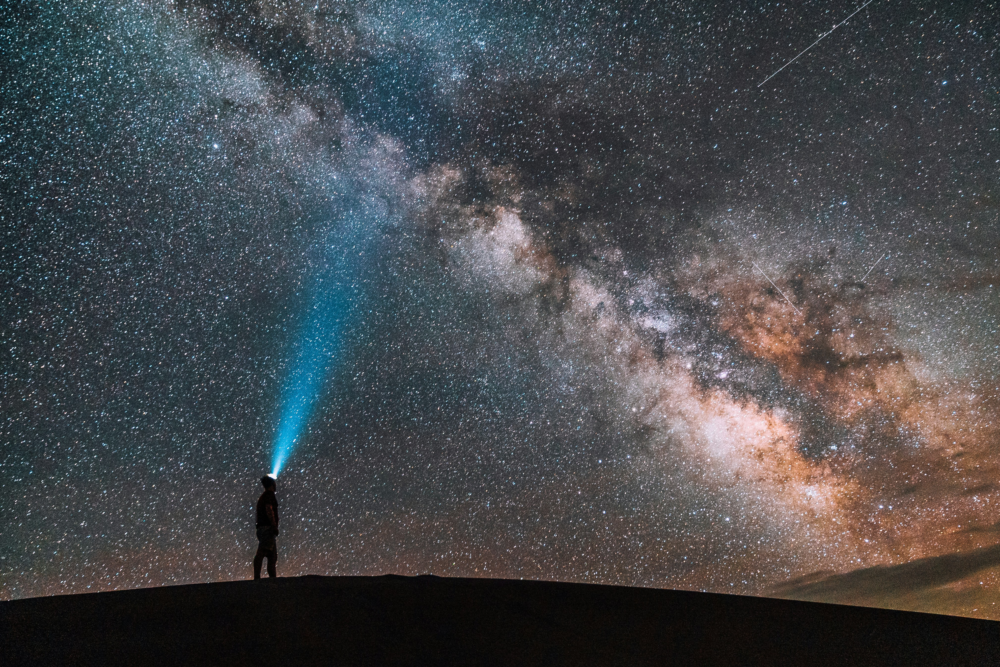

Look up at the night sky tonight. Really look. What you're seeing isn't just stars, it's a preview of everything we still don't understand.
WE ONLY UNDERSTAND ABOUT 5% OF THE UNIVERSE
Sit with that for a second. Everything you've ever touched, every person you've ever met, every planet we've ever mapped, all of it makes up less than 5% of what actually exists. According to NASA, the rest is made of dark energy (about 68%) and dark matter (about 27%), and honestly, scientists don't fully know what either one actually is (NASA Space Place).
- Dark matter can't be seen, but we know it's out there because of how it pulls on galaxies with gravity
- Dark energy is stranger still. It seems to be stretching the entire universe apart, faster with every passing year
- That means 95% of reality is something we can't see, can't touch, and can't fully explain
Doesn't that feel a little unsettling? We like to think we understand the world around us. But most of the universe is quite literally invisible to us.
THE UNIVERSE IS BIGGER THAN YOUR BRAIN WANTS IT TO BE
Here's another one to sit with. A 2016 study using the Hubble Space Telescope estimated the observable universe holds around two trillion galaxies, about ten times more than we previously thought (NASA). And most of those galaxies are too faint for any telescope on Earth to even detect yet, with current estimates suggesting we can only see about 10% of them (AAS Nova).
Two trillion galaxies. Each one holding billions of stars. And we're catching a glimpse of maybe 10% of them. What's hiding in the other 90%?
THIS IS JUST THE BEGINNING
Humans have been looking up at the sky for our entire existence, and we've barely scratched the surface. What civilizations might be out there right now, living lives we can't imagine? What materials or energy sources are floating through space that we haven't even conceived of yet? A thousand years from now, will Earth just be a footnote, the place where it all started before we spread across a thousand planets?
That's what this site is about. Not what we know about space, but everything we don't. Keep going, because it gets stranger from here.